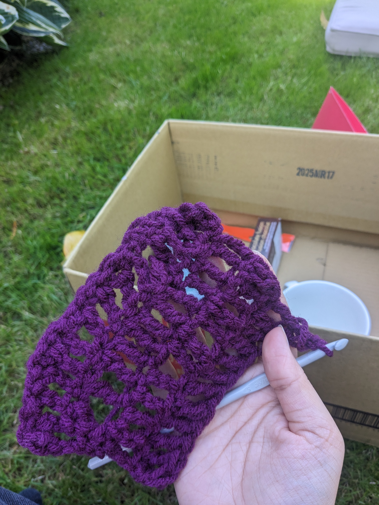
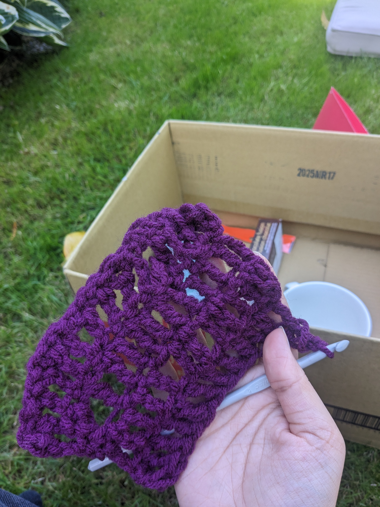

About Me
Hi, I'm Arriyan!
Major: Interactive Arts and Technology with a concentration in Interactive Systems
Interests: Cats, Gaming, Thrifting, Hiking, Baking, Drawing, Crafts, Matcha, and Sushi
Here are some fun svg visualizations!
Current Educational Institution: Simon Fraser University
Some of my Favorite Courses:
IAT265: Multimedia Programming for Art and Design
IAT267: Introduction to Technological Systems
IAT359: Mobile Computing
Skills:
Visual Design, Graphic Design, Wireframing, Prototyping, Art Direction
Mobile App Development, Game Asset Creation and Implementation
Programming Tools:
Android Studio, Arduino IDE, IntelliJ IDEA, Visual Studio Code, GitHub
Java, HTML, CSS, Python, C#
I'm currently a Visual Design Coordinator for
SFU Surge
and a Software Coordinator on an upcoming project with
Enactus
You can also check out one of my favorite projects I made during a IAT265 (Multimedia Programming for Art and Design) course:

×

 
